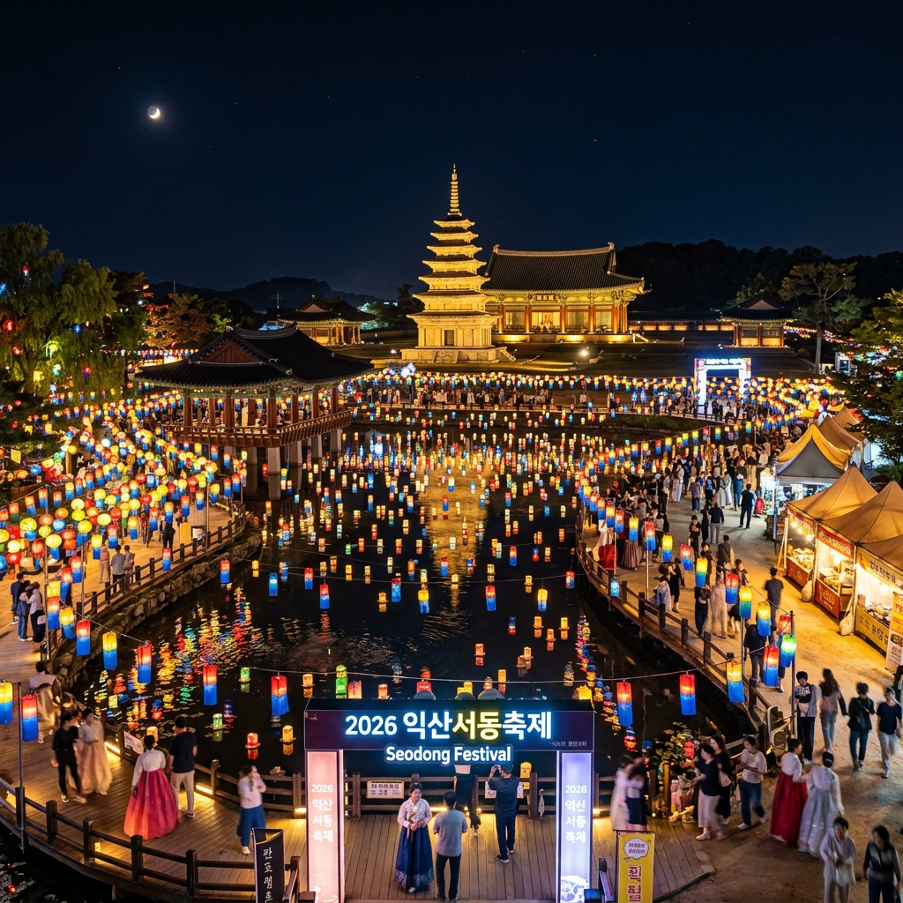
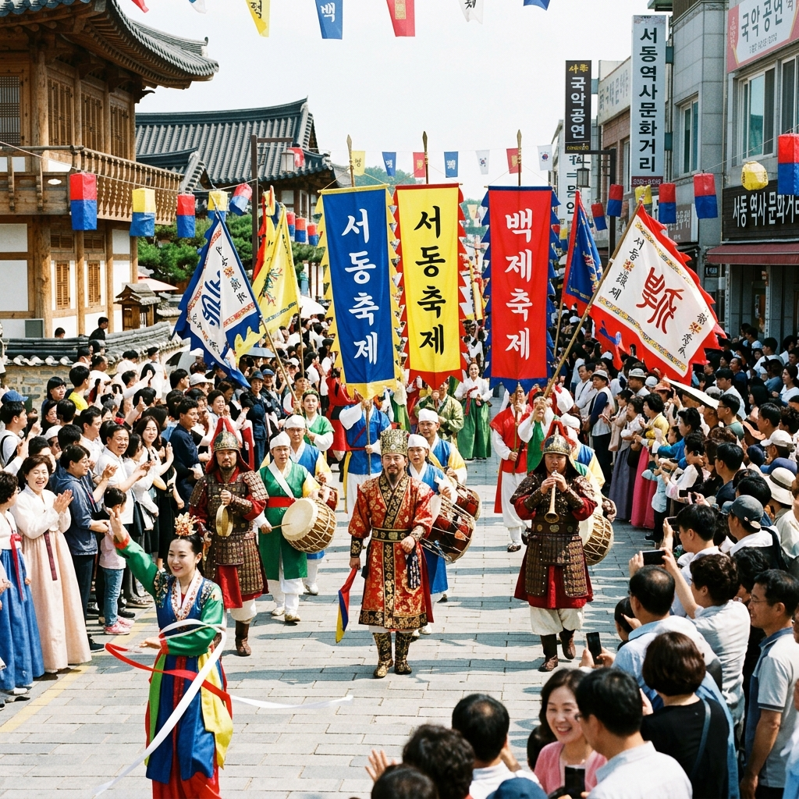
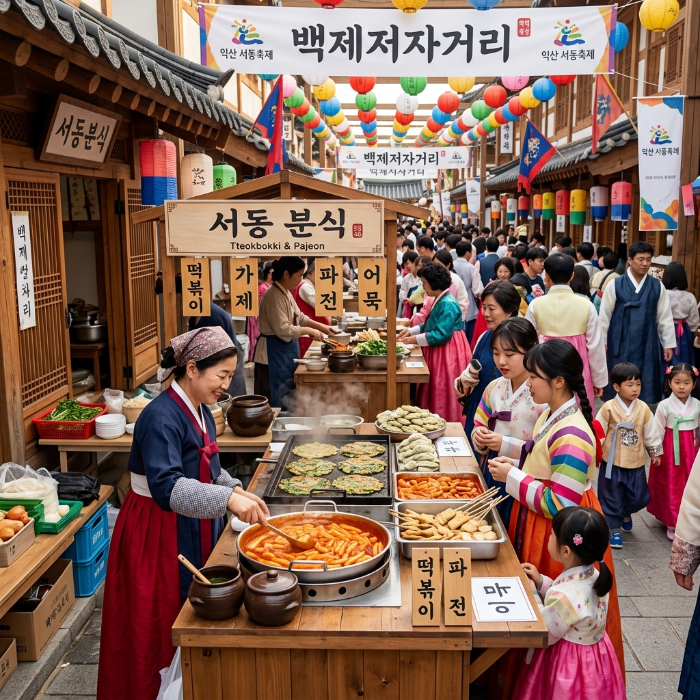

2026 익산 서동축제 일정 장소 프로그램 주차 정보 총정리
천년의 사랑이 숨 쉬는 백제의 고도, 익산에서 2026년 5월의 시작을 알리는 '익산 서동축제'가 화려하게 펼쳐집니다. 이번 축제는 특히 도심권으로 행사장을 옮겨 더욱 접근성을 높였으며, 야간 경관과 다채로운 시민 참여형 프로그램으로 무장했습니다. 서동과 선화공주의 로맨틱한 이야기가 깃든 현장의 열기를 미리 확인해 보세요.
01 | 2026 익산 서동축제 개최 개요 및 일정

서동별빛정원으로 꾸며진 화려한 야간 경관 / AI 제작 이미지
익산 서동축제는 매년 백제 무왕(서동)의 탄생과 선화공주와의 국경을 초월한 사랑을 기리기 위해 개최되는 익산의 대표적인 축제입니다. 2026년 축제 일정은 5월 1일(금)부터 5월 3일(일)까지 총 3일간 진행됩니다. 올해는 축제의 집중도를 높이고 시민들의 참여를 극대화하기 위해 익산 중앙체육공원과 신흥근린공원 일원을 주 무대로 삼았습니다.
축제 기간 내내 익산의 밤하늘은 '서동별빛정원'이라는 이름 아래 수천 개의 LED 전등과 유등으로 수놓아질 예정입니다. 특히 5월의 따스한 봄바람을 맞으며 산책할 수 있는 신흥근린공원의 수변 산책로는 연인들에게 최고의 데이트 코스가 될 것입니다. 개막식은 5월 1일 저녁, 화려한 축하 공연과 함께 시작되며 익산의 역사적 가치를 현대적으로 재해석한 무대를 선보입니다.
02 | 서동축제의 꽃, '그레이트 썸 퍼레이드'
서동축제에서 절대 놓쳐서는 안 될 최고의 볼거리는 단연 '그레이트 썸 퍼레이드'입니다. 5월 1일 오후 5시부터 어양공원을 출발하여 중앙체육공원까지 이어지는 이 행진은 백제 군사들의 위엄 있는 모습과 서동, 선화공주의 행차를 재현합니다.
수백 명의 출연진이 백제 복식을 갖춰 입고 행진하는 모습은 마치 타임머신을 타고 과거로 돌아간 듯한 착각을 불러일으킵니다. 시민들이 직접 행렬에 참여하거나 거리에서 박수를 보내며 소통하는 축제의 장이 될 것입니다. 퍼레이드 중간중간 펼쳐지는 역동적인 퍼포먼스와 전통 음악의 선율은 방문객들의 눈과 귀를 사로잡기에 충분합니다.
03 | 야간의 백미, 서동별빛정원과 레이저쇼

백제 복식을 갖춘 그레이트 썸 퍼레이드 재현 현장 / AI 제작 이미지
해가 지면 익산 서동축제는 또 다른 매력을 발산합니다. 중앙체육공원 곳곳에 설치된 대형 유등과 조형물들이 일제히 불을 밝히며 몽환적인 분위기를 자출합니다. 특히 올해는 매일 밤 8시부터 1시간 동안 화려한 레이저쇼가 진행되어 방문객들에게 잊지 못할 시각적 즐거움을 선사할 예정입니다.
호수 위를 수놓는 빛의 향연은 사진 작가들에게는 놓칠 수 없는 출사 포인트이며, 가족 단위 방문객들에게는 환상적인 동화 속 세상에 온 듯한 기분을 느끼게 해줍니다. 야간 관람을 계획하신다면 조금 일찍 도착하여 좋은 명당을 선점하시는 것을 추천드립니다.
04 | 백제 저잣거리와 미식 탐방
축제하면 빠질 수 없는 것이 바로 먹거리입니다. 행사장 한편에 마련된 '백제 저잣거리'에서는 전통 음식을 맛볼 수 있는 다양한 부스가 운영됩니다. 익산의 특산물을 활용한 요리부터 아이들이 좋아하는 분식까지 폭넓은 메뉴가 준비되어 있습니다.
단순한 먹거리 장터를 넘어, 백제 시대의 의식주를 체험해 볼 수 있는 공간도 마련되어 교육적인 효과도 기대할 수 있습니다. 위생 관리와 합리적인 가격 책정을 위해 지자체에서 직접 관리하고 있으니 안심하고 즐기셔도 좋습니다. 따뜻한 국밥 한 그릇과 함께 축제의 흥을 돋워 보세요.
05 | 어린이를 위한 익스트림존과 체험 프로그램

백제 시대를 재현한 저잣거리와 다양한 먹거리 부스 / AI 제작 이미지
익산 서동축제는 가족 친화형 축제를 지향합니다. 어린이들을 위해 마련된 '익스트림존'에서는 다양한 놀이 기구와 에어바운스 등이 설치되어 아이들이 마음껏 뛰어놀 수 있습니다. 또한, 백제 복식 체험, 서동요 배우기, 전통 공예품 만들기 등 아이들의 오감을 자극하는 유익한 체험들이 가득합니다.
특히 '전국 어린이 서동요제'는 아이들이 직접 무대에 올라 자신의 끼를 발산할 수 있는 기회를 제공합니다. 부모님들에게는 아이들의 예쁜 모습을 사진에 담을 수 있는 최고의 시간이 될 것입니다. 체험 프로그램은 사전 예약이 필요한 경우가 있으니 공식 홈페이지를 미리 확인하시기 바랍니다.
06 | 서동선발대회와 K-POP 댄스 대회
축제의 활기를 더해주는 경연 프로그램도 빼놓을 수 없습니다. 익산의 아들인 서동을 뽑는 '전국 서동선발대회'는 건강한 신체와 명석한 두뇌를 가진 인재를 선발하는 행사로 많은 관심을 받습니다. 선정된 서동은 향후 익산시를 알리는 홍보대사로 활동하게 됩니다.
또한, 젊은 층을 타겟으로 한 '서동 K-POP 댄스대회'는 축제에 역동성을 더합니다. 전국에서 모여든 댄스 팀들의 화려한 퍼포먼스는 전통과 현대가 어우러지는 익산 서동축제만의 독특한 색깔을 보여줍니다. 무대 앞 스탠딩 구역에서 함께 호흡하며 축제의 에너지를 만끽해 보세요.
07 | 주차장 이용 및 교통 정보 가이드
도심권으로 행사장이 옮겨지면서 접근성은 좋아졌지만, 많은 인파가 몰릴 것으로 예상되어 주차 전략이 중요합니다. 중앙체육공원 인근의 공영 주차장 외에도 축제 기간 동안 주변 학교나 공공기관의 부지가 임시 주차장으로 개방됩니다.
가장 효율적인 방법은 익산역이나 버스터미널에서 운행하는 셔틀버스를 이용하는 것입니다. 자가용 이용 시에는 실시간 교통 정보를 제공하는 축제 공식 앱이나 안내 표지판을 잘 확인해야 낭패를 보지 않습니다. 행사 시작 1~2시간 전 미리 도착하는 여유가 필요합니다.
08 | 방문 전 필수 체크사항 및 준비물
축제를 완벽하게 즐기기 위해서는 몇 가지 준비가 필요합니다. 야간 관람 시 기온이 떨어질 수 있으므로 가벼운 겉옷을 준비하는 것이 좋습니다. 또한, 넓은 행사장을 이동해야 하므로 편안한 운동화는 필수입니다.
돗자리와 휴대용 의자를 챙겨오시면 레이저쇼나 공연 관람 시 더욱 편안하게 즐기실 수 있습니다. 현장에서 배부하는 축제 안내 리플렛을 꼭 챙겨 프로그램 시간표와 화장실 위치를 미리 파악해 두세요. 쓰레기는 지정된 장소에 버리는 성숙한 시민 의식도 잊지 말아야겠죠?
09 | 익산 여행 연계 코스 추천
서동축제만 보고 가기 아쉽다면 주변 명소도 함께 둘러보세요. 유네스코 세계문화유산인 '미륵사지'와 '왕궁리 유적'은 백제의 찬란한 문화를 직접 느낄 수 있는 곳입니다. 축제장에서 차로 20~30분 내외면 도착할 수 있어 당일치기나 1박 2일 코스로 적합합니다.
특히 해 질 녘 미륵사지 석탑 앞에서 담는 사진은 인생샷을 보장합니다. 익산 보석박물관이나 교도소 세트장 등 이색적인 관광지도 있어 취향에 맞는 여행 코스를 설계해 보세요. 역사와 축제, 그리고 힐링이 공존하는 익산에서의 5월은 여러분에게 특별한 선물이 될 것입니다.
#익산서동축제
#2026익산축제
#서동축제일정
#전북5월축제
#익산가볼만한곳
#서동선화공주
#익산야경명소
#가족나들이추천
#전통퍼레이드
#백제역사여행